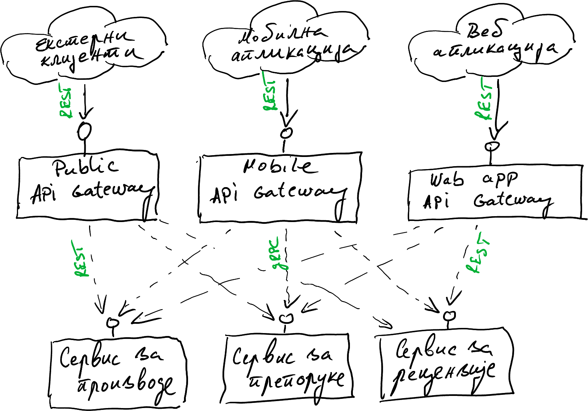

Микросервисни обрасци
У изради
Проф. др Игор Дејановић (igord at uns ac rs)
Креирано 2022-12-20 Tue 22:00, притисни ESC за мапу, "м" за мени, Ctrl+Shift+F за претрагу
Садржај
1. Увод
1.1. Микросервиси (Microservices)
- Софтверске компоненте.
- Висока кохезија, слаба спрега.
- Комуникација се обавља путем стандардних технолошки независних протокола (најчешће HTTP).
- Могу бити имплементирани у различитим програмских језицима и технологијама.
- Мали су, ограниченог контекста. Независно се развијају и уводе.
- Имају јасно дефинисане интерфејсе путем којих комуницирају.
Unix филозофија:
Do one thing and do it well.
1.2. Архитектура базирана на микросервисима
- Архитектонски стил где се апликација гради као скуп слабо спрегнутих "малих" сервиса (микросервиса) који сарађују.
- Варијанта Service-Oriented Architecture (SOA) али сервиси су "мали" и протоколи за комуникацију су једноставни (light-weight).
- Микросервиси пружају услуге и/или користе друге микросервисе.
- У циљу независне миграције микросервиса на нове верзије интерфејси се верзионирају и омогућава се клијентима да користе старе интерфејсе у прелазном периоду.
1.3. Предности у односу на монолитну архитектуру
- Тимови могу бити технолошки хетерогени.
- Увођење (deploy) се обавља у малим инкрементима (fine-grained).
- Модуларност, декомпозиција. Лакше разумевање, развој и тестирање. Отпорност на "ерозију архитектуре".
- Боља скалабилност. Боља еластичност. Лако додавање нових микросервиса по потреби.
- Боља отпорност на отказе. Уколико један микросервис "падне" остатак апликације наставља да ради.
- Лакша миграција на нове технологије. Могућа постепеним заменама микросервиса.
- Интеграција хетерогених и "старих" система (legacy).
- Континуална интеграција и достава (Continuous Integration/Delivery)
1.4. Мане у односу на монолитну архитектуру
- Више "покретних делова". Захтева боље алате за увођење и надзор.
- Теже дебаговање. Дебаговање захтева праћење захтева кроз више микросервиса који се извршавају често на различитим физичким/виртуелним рачунарима.
- Додатни трошкови (overheads) услед комуникације.
- Додатни трошкови у случају потребе за дељењем података.
2. Архитектура базе података
2.1. База података по сервису (Database per service)
- У циљу слабог спрезања сервиса подаци над којима сервиси оперишу се имплементирају као приватни.
- Други сервиси не могу приступити подацима директно већ само кроз интерфејс сервиса.
2.1.1. Структура
2.1.2. Предности
- Подаци су део имплементације сервиса.
- Имплементација приватне базе се може мењати независно од остатка система.
- Могуће је користити хетерогене технологије.
2.1.3. Мане
2.1.4. Начини имплементације
- Употреба једне инстанце базе за све сервисе:
- приватне табеле по сервису,
- приватна шема по сервису.
- Посебна инстанца базе по сервису.
2.2. Дељена база података (Shared database)
- У циљу подршке за ACID трансакције сервиси деле исту базу податак и могу слободно да приступају подацима других сервиса.
2.2.1. Структура
2.2.2. Предности
- Једноставније за имплементацију и операцију.
- Једноставније трансакције (ACID) и упити (нпр. могуће JOIN између табела различитих сервиса).
2.2.3. Мане
- Јача спрега између сервиса у време развоја (нпр. одржавање шеме базе мора бити кооринисано између тимова) и у време извршавања (нпр. један сервис може да закључа табелу и спречи друге сервисе да приступе).
- Сервиси могу да мењају податке других сервиса. Ово је могуће административно регулисати уколико база подржава.
- Иста база можда неће задовољити потребне функционалне и нефункционалне особине захтеване од стране неких сервиса.
3. Обезбеђивање конзистенције
3.1. Saga
- Вид дистрибуиране трансакције. Мање ригидна од two-phase commit (2PC).
- Очување конзистенције података између сервиса.
- Користи се када је у употреби Database per service образац за имплементацију трансакција.
- Низ локалних трансакција (ACID) које објавом поруке/догађаја иницирају следећу трансакцију у ланцу. Уколико нека од трансакција не успе, извршава се поништавање.
3.1.1. Приступи
- Два приступа у координацији трансакције:
- Базиран на кореографији (Choreography) - после сваке локалне трансакције објављује се догађај који иницира извршавање следеће трансакције у низу.
- Базиран на оркестрацији (Orchestration) - оркестратор (посебан објекат) је задужен да обавести учеснике да започну или да пониште трансакцију.
3.1.2. Структура - кореографија
- Сервис за наручивање прима захтев
POST /ordersкреира наруџбину у стању у обради - Прослеђује догађај
Наруџбина креирана - Сервис за купце покушава да резервише средства и објављује догађај који представља резултат операције: средства су резервисана или је кредит прекорачен.
- Сервис за наручивање прихвата или одбија наруџбину.

3.1.3. Структура - оркестрација
- Сервис за наручивање је оркестратор тј. задужен је за координацију целокупног процеса наручивања.
3.1.4. Предности
- Слабија спрега. Мање ригидан систем.
- Боља скалабилност.
3.1.5. Мане
- Мора се пажљиво моделовати редослед операција због потенцијалног поништавања.
- Шта радити у ситуацији када је операција неуспешна због техничког проблема (нпр. сервис није тренутно доступан)?
- Коначна конзистентност (Eventual Consistency).
3.2. Event sourcing (ES)
- Користи се код архитектуре вођене догађајима (Event-Driven).
- Уместо чувања тренутног стања ентитета чува се низ догађаја који су мењали ентитет.
- Текуће стање се може добити применом свих догађаја до садашњег тренутка.
- Природно се користи са обрасцем CQRS.
3.2.1. Структура код класичног приступа
3.2.2. Структура код ES приступа
3.2.3. Напомене
- Ток догађаја треба да буде једини извор текућег стања.
- Предности:
- различити модели се могу изградити применом тока догађаја у будућности.
- природно садржи пуну историју измена што омогућава ревизију и контролу.
- Мана: немогућност постављања упита над током догађаја - због тога се користи у синергији са CQRS.
- Додатно можемо користити брокере порука (message brokers) уместо базе података.
4. Постављање упита
4.1. API композиција (API Composition)
- У случају употребе обрасца Database per service поставља се питање како имплементирати упите који удружују податке из различитих микросервиса.
4.1.1. Решење
- Креирати сервис који поставља појединачне упите и затим комбинује податке у меморији и враћа јединствени одговор са удруженим подацима.
4.1.2. Структура
4.1.3. Предности и мане
- Предности:
- Поједностављење сложених упита.
- Једно место за ажурирање сложених упита.
- Мане:
- Поједини упити могу бити неефикасни јер се велика количина података прености преко мреже и удружује у меморији.
4.1.4. Пример
- Образац API Gateway често ради API композицију.
4.2. CQRS
- Command Query Responsibility Segregation (CQRS) се користи у ситуацији када имамо обрасце Database per service и Event sourcing имплементиране и желимо да подржимо упите који удружују податке из више микросервиса.
- Базиран на идеји поделе захтева на оне који мењају стања и оне који само
читају тј. немају бочне ефекте. Еквивалентно са REST методама за читање (
GET, HEAD) и измену стања (POST, PUT, PATCH...). - Креирање базе која је само за читање и која се континуално ажурира обрадом догађаја који се емитују при промени података.
4.2.1. Структура - посебне базе
- Захтев за изменом производа
(1)уписује текуће стање у локалну базу(2)и објављује догађај(3). - Сервис за упите, на основу догађаја, ажурира
(4)свој интерни модел оптимизован за упите који чува у локалној бази.
4.2.2. Структура - јединствена база
- Захтев за изменом производа
(1)уписује тренутно стање у локалну базу(2)и ажурира модел за упите(3)и затим објављује догађај(4). - Сервис за упите чита ажуран модел за упите
(5).
4.2.3. Предности
- Неминовна употреба код употребе обрасца Event sourcing.
- Боља подела надлежности.
- Једноставнији упитни модел. Боље перформансе упита. Подаци су најчешће денормализовани у циљу постизања оптималних перформанси.
4.2.4. Мане
- Увећана сложеност.
- Кашњење у репликацији. Крајња доследност (Eventual Consistency).
- Дуплирање података. Постоји могућност неконзистенције.
5. Комуникација
5.1. Messaging
- Слање порука је у основи архитектуре вођене догађајима.
- Асинхрона комуникација, слабо спрезање микросервиса.
- Посредник (message broker), који мора бити високо доступан, омогућава баферовање и перзистенцију порука.
5.1.1. Send/Receive образац
- Обично представља комуникацију између два учесника (point-to-point) са специфичном наменом, најчешће извршење акције над циљним сервисом.
- Овај облик је коришћен типично од стране команди.
- Мора се обезбедити да само циљани сервис реагује на поруку.

5.1.2. Publish/Subscribe образац
- Комуникација "један на више".
- Сервиси заинтересовани за одређене поруке се региструју (subscribe).
- Сервиси примају поруке и обрађују их у паралели различитом брзином.
- Основа хоризонталног скалирања.
5.1.3. Request/Response образац
- Имплементира се када је потребна повратна информација, обично при имплементацији Send/Receive образца.
- Команда и догађај као реакција на команду могу бити корелирани одређеним идентификатором.
5.2. Remote Procedure Invocation (RPI)
- Сервиси често морају тесније сарађивати да би обрадили одређени захтев.
- Понекад је синхрони начин комуникације бољи. Тада користимо RPI.
5.2.1. Предности
- Једноставан вид комуникације. Синхрона варијанта Request/Response образца.
5.2.2. Мане
- Јако темпорално спрезање сервиса. Морају бити доступни истовремено.
5.2.3. Приступи
- REST
- Добро познат приступ. Основа комуникације на вебу.
- Најчешће се користи у комбинацији са текстуалним порукама, нпр. JSON.
- gRPC
- Развијен у Гуглу.
- Акценат на перформансама.
- Бинарне поруке базиране на технологији Protocol Buffers.
- Apache Thrift
- Развијен у Фејсбуку.
- Различити формати порука и транспортни протоколи.
5.3. API Gateway
- Инстанца класичног ОО обрасца Facade. Скривање интерне сложености.
- Посредник за спољне клијенте.
- Инстанца обрасца API композицијe за екстерне клијенте. Интеграција података са више микросервиса.
- Може имплементирати додатне функционалности, нпр. ауторизацију.
5.3.1. Структура
5.3.2. Варијанта - Backends for Frontends
- По један гејтвеј за сваки фронтенд.
- Специјализација API-ja.

5.3.3. Напомена
- Једна тачка отказа. Обезбедити високу доступност.
6. Откривање сервиса
6.1. Service Registry
- За разлику од класичних дистрибуираних система код микросервисних архитектура сервиси нису увек на истој мрежној адреси.
- Како клијент сазнаје где се сервис налази?
- Специјални сервис који је увек на истој локацији и који има информације о локацијама свих других сервиса.
- Два приступа:
- клијентски при којем клијент сервис сам пита регистар,
- серверски при којем имамо посредника (рутер) који поставља питање регистру.
6.1.1. Структура - клијентски
6.1.2. Структура - серверски
7. Литература
- Hugo Filipe Oliveira Rocha, Practical Event-Driven Microservices Architecture, Apress, 2022.
- Microsoft, Cloud Design Patterns
- Chris Richardson, Microservice Architecture
- Wikipedia, Microservices